Strategii direcționale
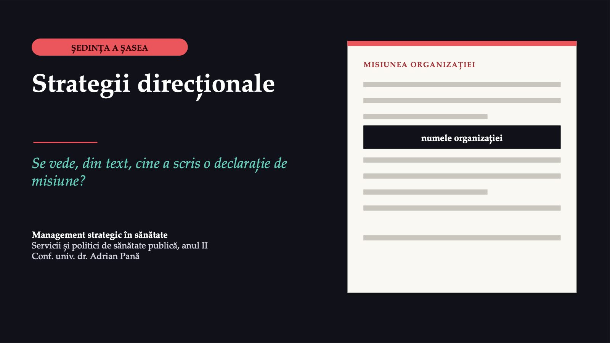
1 / 45Cursul trecut a întors privirea spre interiorul organizației. Acum știm ce se întâmplă în jurul organizației, cine sunt concurenții și ce poate ea însăși. Întrebarea se schimbă: după tot ce am aflat, cine vrem să fim și unde vrem să ajungem?
Dacă ați acoperi numele organizației, ați putea ghici cine a scris textul?
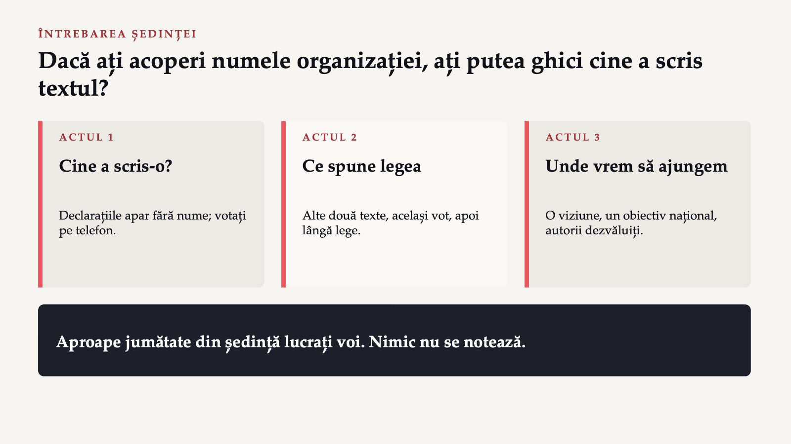
2 / 45Deschideți situl spitalului din orașul vostru, al casei de asigurări de sănătate a județului sau al unei clinici private. Căutați pagina „Misiune”, „Despre noi” sau „Valori”. Citiți textul și întrebați-vă: dacă ați acoperi numele organizației, ați putea ghici cine l-a scris? La curs veți face exact acest lucru, cu opt texte reale. În primul act apar, pe rând, declarațiile mai multor organizații, fără nume. Votați individual, pe telefon, cine credeți că le-a scris. Rezultatul se proiectează o singură dată, apoi discutăm cu toată sala. În al doilea act punem alte două texte lângă ce scrie legea. În al treilea act urmează o viziune, un obiectiv din Strategia națională de sănătate și dezvăluirea celor opt autori. Aproape jumătate din ședință lucrați voi. Nimic din ce faceți în sală nu se notează.
Opt declarații, fără nume
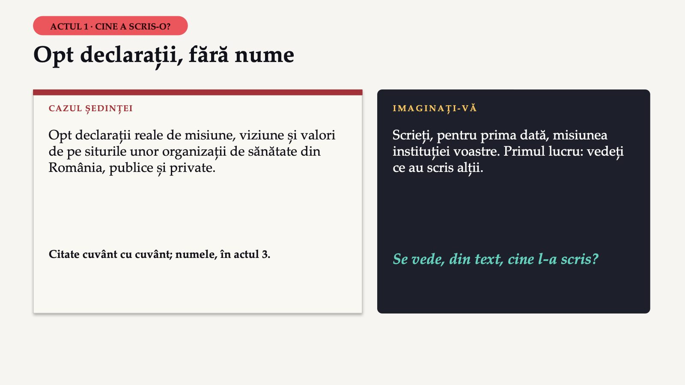
3 / 45Cazul ședinței nu este construit. Sunt opt declarații reale de misiune, viziune și valori, copiate de pe siturile oficiale ale unor organizații de sănătate din România, publice și private. Textele sunt citate cuvânt cu cuvânt, așa cum apar pe situri, inclusiv acolo unde lipsesc diacriticele. În sală apar fără numele organizației. Imaginați-vă că lucrați într-o direcție de sănătate publică sau într-o casă de asigurări și trebuie să scrieți, pentru prima dată, misiunea instituției voastre. Primul lucru pe care îl faceți, aproape sigur, este să vedeți ce au scris alții.
Cine a scris-o?
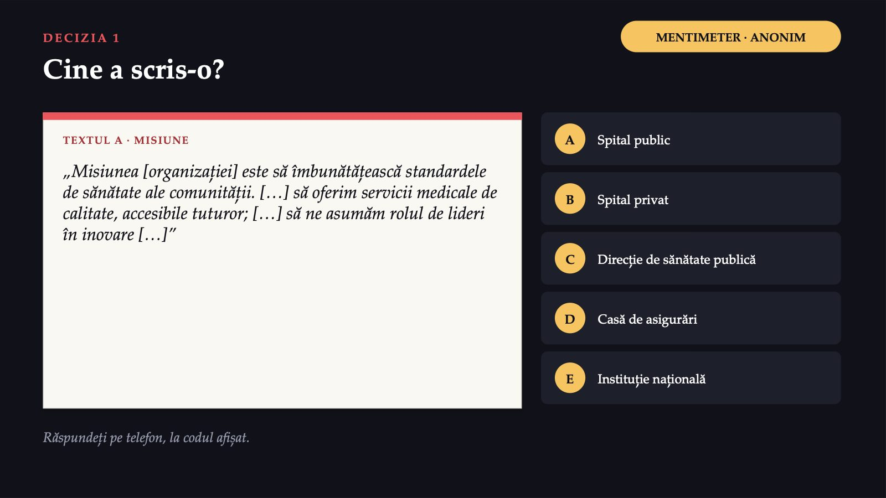
4 / 45Textul A: „Misiunea [organizației] este să îmbunătățească standardele de sănătate ale comunității.” Dorințele a patra și a cincea privesc o interfață modernă și prietenoasă, respectiv angajații și dezvoltarea lor profesională. Cine a scris-o? Un spital public, un spital privat, o direcție de sănătate publică, o casă de asigurări de sănătate sau o instituție națională a Ministerului Sănătății?
Răspunsul apare după ședință
Răspunsul apare după ședință
Cine a scris-o?
6 / 45Același vot, în același mod. Textul B: „Ne-am asumat misiunea de a îmbunătăți calitatea vieții pacienților noștri.” Cine a scris-o? Aceleași cinci variante.
Răspunsul apare după ședință
Răspunsul apare după ședință
Cine a scris această frază?
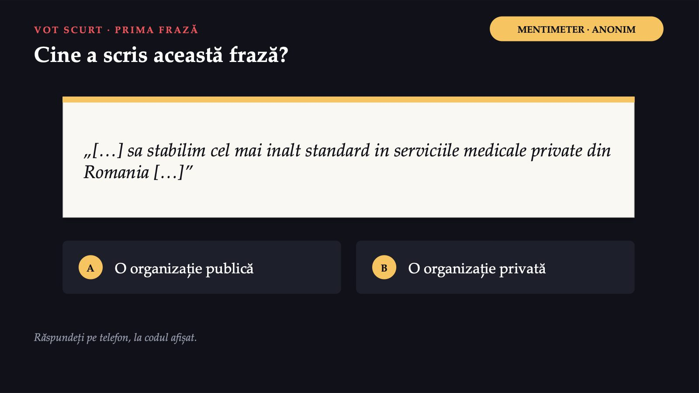
8 / 45Două voturi scurte. Pe ecran, câte o frază din alte două texte, fără nume: „[…] sa stabilim cel mai inalt standard in serviciile medicale private din Romania […]”. Cine a scris-o? O organizație publică sau una privată?
Cine a scris această frază?
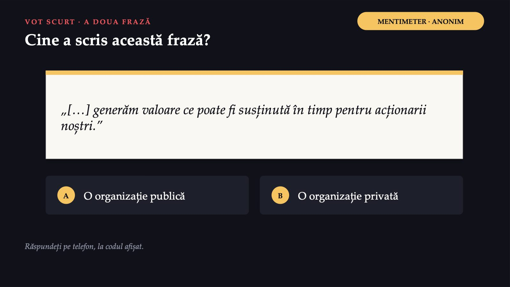
9 / 45A doua frază: „[…] generăm valoare ce poate fi susținută în timp pentru acționarii noștri.” Cine a scris-o? O organizație publică sau una privată?
Răspunsul apare după ședință
Răspunsul apare după ședință
Rescrieți într-o frază misiunea textului A, ca să fie a unui spital clinic județean de urgență.
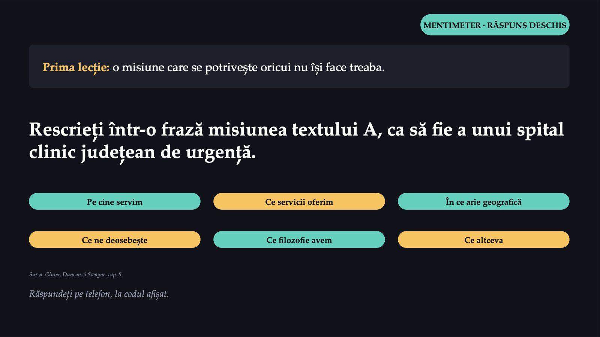
11 / 45Aceasta este prima lecție a ședinței. O misiune care s-ar potrivi oricărei organizații de același tip nu își face treaba. Manualul definește misiunea tocmai prin ce deosebește organizația de celelalte și prin întinderea activității ei. Pe Mentimeter, răspuns deschis și anonim: rescrieți într-o frază misiunea textului A, ca să se vadă că este a unui spital clinic județean de urgență. Un model de comparat apare în actul al doilea, la mandatul legal.
Strategiile direcționale
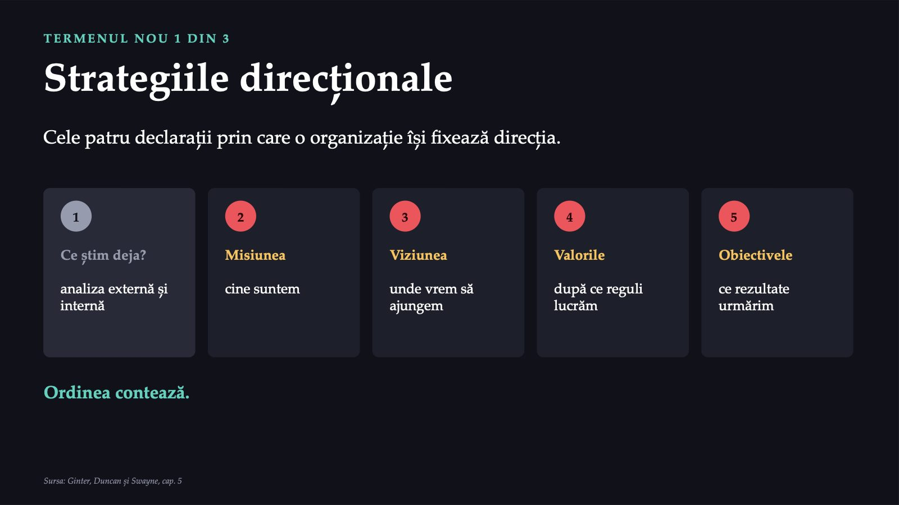
12 / 45Strategiile direcționale sunt cele patru declarații prin care o organizație își fixează direcția: misiunea, viziunea, valorile și obiectivele strategice. Sunt deciziile strategice cele mai largi și pun limite tuturor deciziilor de mai târziu. În cuvinte de zi cu zi: cine suntem, unde vrem să ajungem, după ce reguli lucrăm și ce rezultate urmărim. Materialul titularului rezumă procesul în cinci pași. Primul este „ce știm deja?”: analiza externă, analiza internă și analiza ariei de servicii. Al doilea este misiunea: ce vrem să fim, în acest context. Al treilea este viziunea: cum vrem să arătăm peste cinci–șapte ani, dacă ne reușește. Al patrulea sunt valorile: după ce reguli lucrăm. Al cincilea sunt obiectivele: ce ținte concrete punem, ca să nu rămânem la nivel de slogan. Ordinea contează.
Aceleași opt texte, acum lângă lege
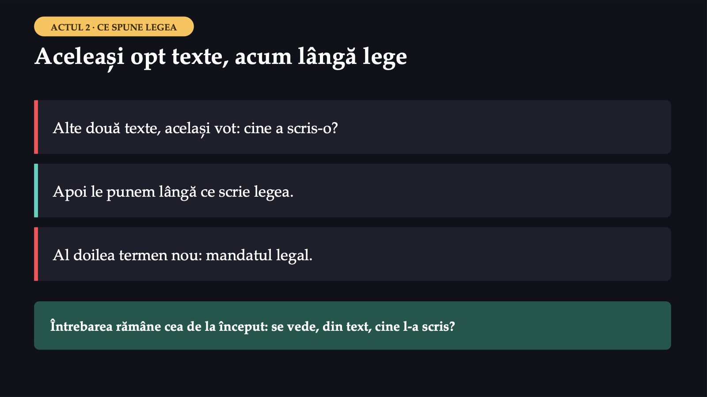
13 / 45Alte două texte, același vot. Apoi le punem lângă ce scrie legea. Al doilea termen nou: mandatul legal.
Cine a scris-o?
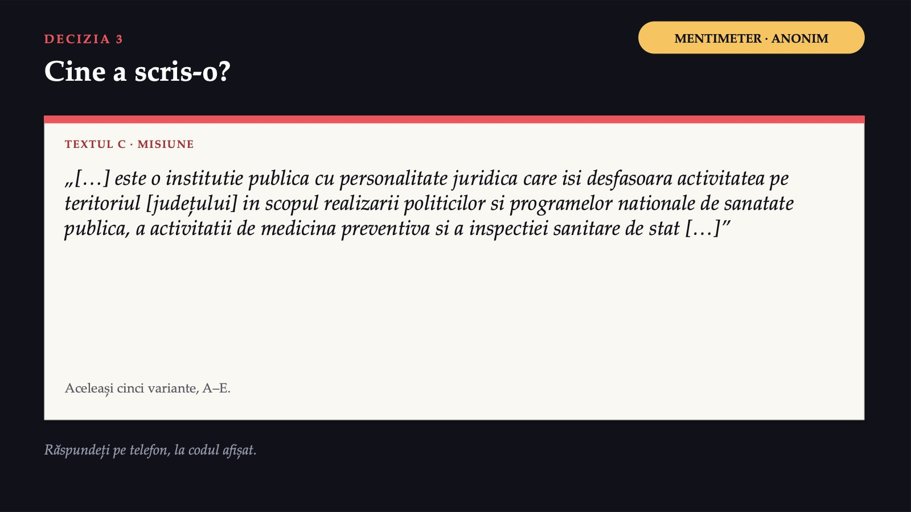
14 / 45Același vot. Textul C, fără nume și fără diacritice, cum este pe sit: „[…] este o institutie publica cu personalitate juridica care isi desfasoara activitatea pe teritoriul [județului]”. Cine a scris-o? Aceleași cinci variante.
Răspunsul apare după ședință
Răspunsul apare după ședință
Elemente de strategie, îngropate într-o listă
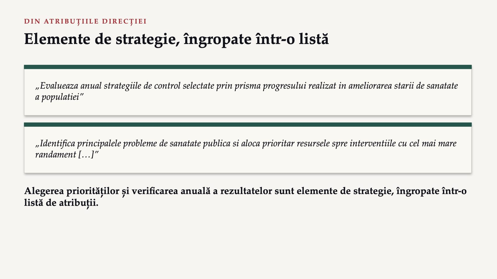
16 / 45Interesant este ce apare mai jos, printre atribuțiile de pe aceeași pagină. Direcția scrie că „Evalueaza anual strategiile de control selectate prin prisma progresului realizat in ameliorarea starii de sanatate a populatiei” și că „Identifica principalele probleme de sanatate publica si aloca prioritar resursele spre interventiile cu cel mai mare randament in ameliorarea starii de sanatate”. Acestea sunt, de fapt, elemente de strategie: alegerea priorităților și verificarea anuală a rezultatelor. Ele există, dar sunt îngropate într-o listă de atribuții.
Mandatul legal
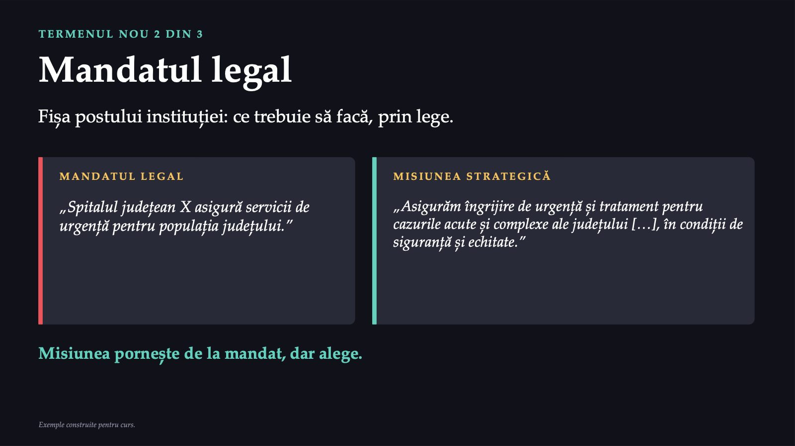
17 / 45Mandatul legal este ce trebuie să facă o organizație pentru că așa scrie în lege sau în actul ei de înființare, indiferent ce își propune conducerea. Misiunea strategică pornește de la mandat, dar alege: pentru cine, cum și cu ce prioritate. În cuvinte de zi cu zi: mandatul este fișa postului instituției; misiunea este felul în care instituția alege să și-o facă. Fișa disciplinei pune această distincție chiar la începutul temei: „mandat legal și misiune strategică”. Mandatul legal ar fi: „Spitalul județean X asigură servicii de urgență pentru populația județului”, adică textul de înființare sau al contractului cu casa de asigurări. O misiune strategică ar fi: „Asigurăm îngrijire de urgență și tratament pentru cazurile acute și complexe ale județului, integrate cu serviciile ambulatorii și cu rețeaua de medicină de familie, în condiții de siguranță și echitate.” Diferența este că misiunea strategică spune pentru cine, spune cum, poate fi comunicată în interior și în afară și lasă să se vadă ce nu face spitalul.
Cinci mișcări pentru o misiune scurtă
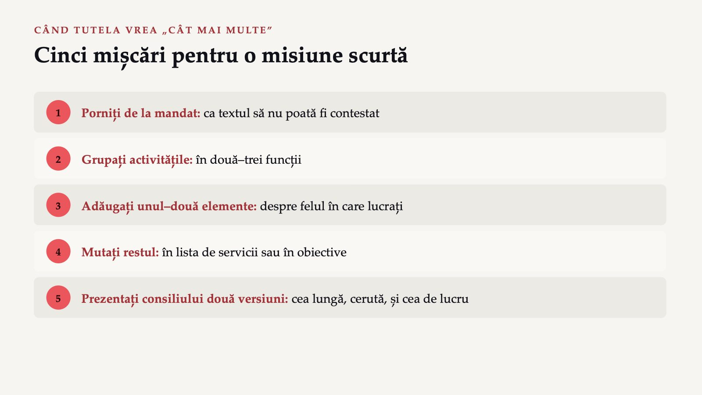
18 / 45Ce faceți când tutela vrea „cât mai multe” lucruri în misiune, iar voi vreți o misiune scurtă și distinctivă? Materialul titularului propune cinci mișcări. Porniți de la mandat, ca textul să nu poată fi contestat. Grupați activitățile în două–trei funcții principale. Adăugați unul–două elemente despre felul în care lucrați: echitate, parteneriat, siguranța pacientului. Mutați restul în lista de servicii sau în obiective. Prezentați consiliului două versiuni, cea lungă, cerută, și cea de lucru.
Cine a scris-o?
![MENTIMETER · ANONIM DECIZIA 4 Cine a scris-o? TEXTUL D · VALORI „[…] legalitate, imparțialitate și obiectivitate, transparență, eficiență și eficacitate, […] respect pentru cetățean, protecția datelor cu caracter personal, cooperare interinstituțională și consecvență. Aceste valori se reflectă […] în administrarea prudentă și transparentă a fondurilor publice, […] cu asigurații, furnizorii și partenerii publici.” Aceleași cinci variante, A–E. Răspundeți pe telefon, la codul afișat.](diapozitive/C06/019.jpg) 19 / 45
19 / 45Același vot. Textul D este o listă de valori și fraza care o urmează, fără nume. Cine a scris-o? Aceleași cinci variante.
Răspunsul apare după ședință
Răspunsul apare după ședință
Cine a scris această frază?
21 / 45Vot scurt, în același mod ca la frazele din actul întâi. Pe ecran, un rând dintr-un alt text, fără nume: „Masurat prin: Clienti care revin, Oameni implicati, Investitori care investesc pe termen lung”. Cine l-a scris: o organizație publică sau una privată?
Răspunsul apare după ședință
Răspunsul apare după ședință
Casa și direcția: aproape tot. Spitalul: mai puțin
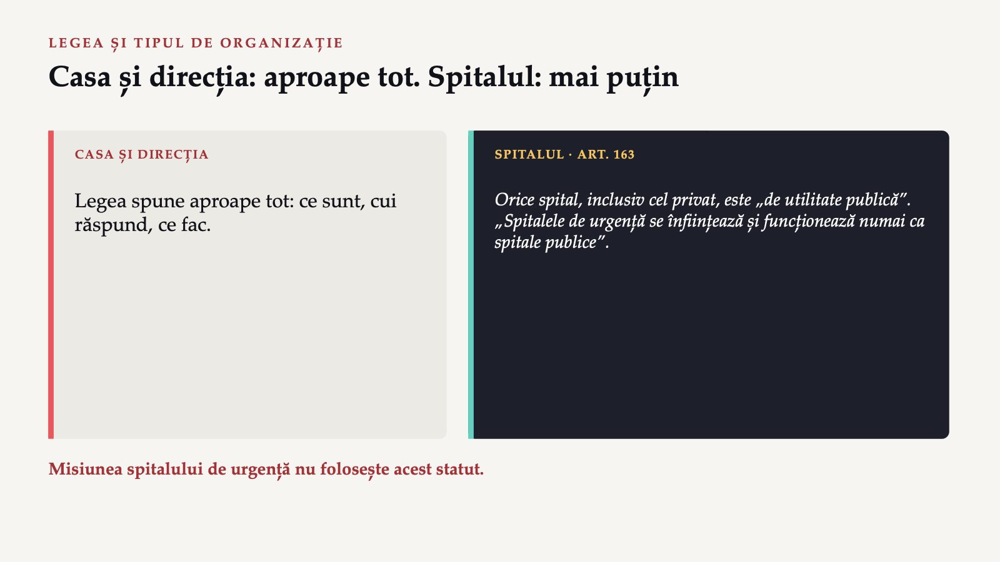
23 / 45Puneți cele patru texte lângă lege și apare un tipar. Pentru casa de asigurări și pentru direcția de sănătate publică, legea spune aproape tot: ce sunt, cui răspund și ce trebuie să facă. Declarațiile lor reiau mandatul, iar partea de alegere strategică este mică. Pentru spitale, legea spune mai puțin. Potrivit art. 163 alin. (1)–(2) din Legea nr. 95/2006, „Spitalul este unitatea sanitară cu paturi, de utilitate publică, cu personalitate juridică, ce furnizează servicii medicale”, iar spitalul „poate fi public, public cu secții sau compartimente private sau privat”. Legea numește orice spital, inclusiv cel privat, unitate „de utilitate publică”. Spitalele de urgență pot fi numai publice. Spitalele private pot avea servicii de urgență, cu obligația de a stabiliza orice pacient care sosește în stare critică (art. 111 alin. (3)), dar nu pot fi spitale de urgență. Dintre spitalele celor opt texte, numai unul este spital de urgență, un statut pe care legea îl rezervă spitalelor publice. Misiunea lui nu folosește acest statut. Direcția de sănătate publică și casa de asigurări au și ele roluri pe care nu le poate prelua un privat, dar acestea le sunt date de lege, iar declarațiile lor le reiau.
Ce este strategie într-o instituție publică
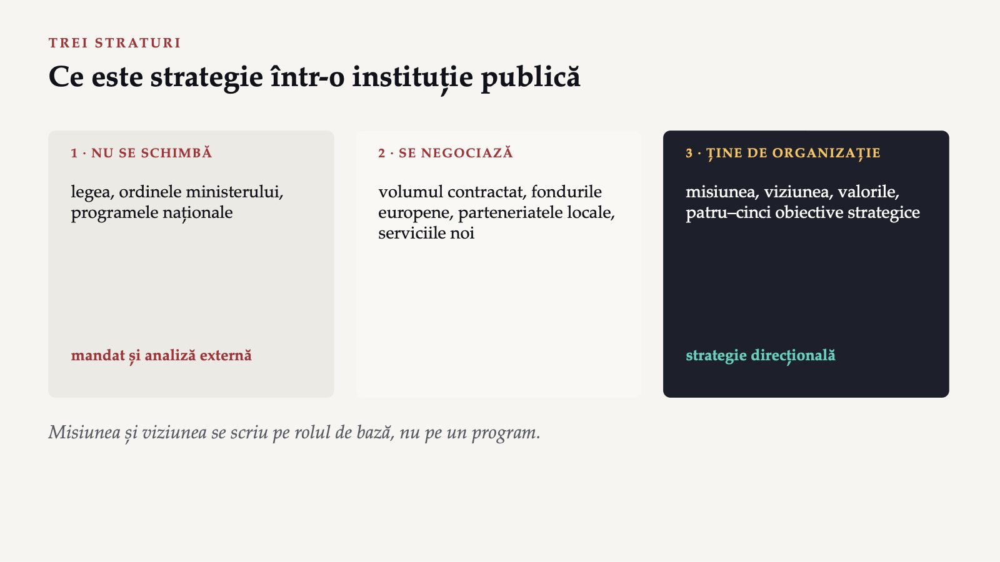
24 / 45Materialul titularului descrie această situație ca trei straturi ale direcției unei organizații sanitare publice din România. Primul strat nu se schimbă: legea sănătății, ordinele Ministerului Sănătății, programele naționale, contractul-cadru cu casa de asigurări. Al doilea strat se negociază: volumul contractat, proiectele cu fonduri europene, parteneriatele cu autoritățile locale, serviciile comunitare noi. Al treilea strat ține de organizație: misiunea, viziunea, valorile, cele patru–cinci obiective strategice. Numai al treilea strat este, propriu-zis, strategie direcțională. Misiunea și viziunea se scriu pe rolul de bază al organizației, iar mijloacele de finanțare se trec la obiective, „conform prevederilor în vigoare”.
Pauză
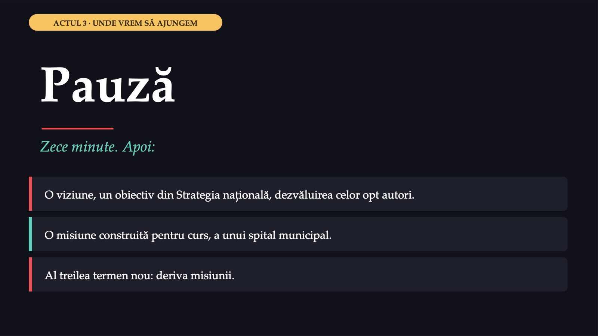
25 / 45Actul al treilea: unde vrem să ajungem. O viziune, un obiectiv din Strategia națională de sănătate și dezvăluirea celor opt autori. Apoi o misiune construită pentru curs, a unui spital municipal. Al treilea termen nou: deriva misiunii.
Cine a scris-o?
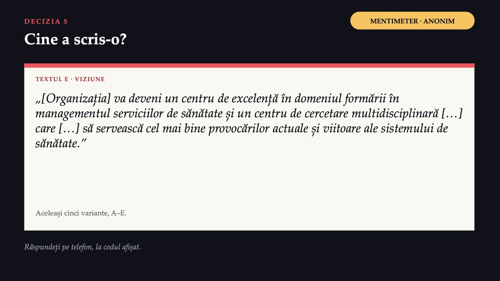
26 / 45Același vot. Textul E este o viziune, fără nume. Cine a scris-o? Aceleași cinci variante.
Răspunsul apare după ședință
Răspunsul apare după ședință
O viziune bună: poziție, termen, cinste
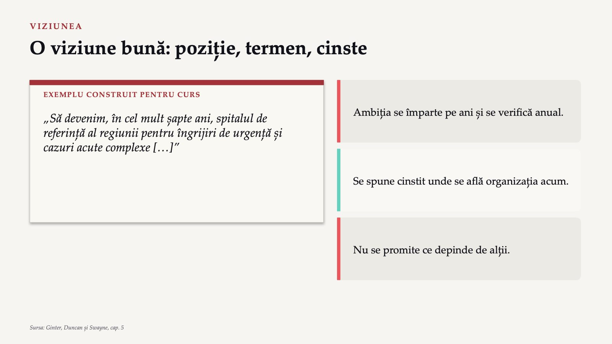
28 / 45Materialul titularului dă un exemplu pentru un spital județean cu misiune de urgență: „Să devenim, în cel mult șapte ani, spitalul de referință al regiunii pentru îngrijiri de urgență și cazuri acute complexe, recunoscut pentru siguranța pacientului și colaborarea cu rețeaua prespitalicească.” Exemplul este construit pentru curs, nu este viziunea vreunui spital real. Conducerea trebuie să spună cinstit, lângă imaginea dorită, și unde se află spitalul acum. Viziunea ambițioasă se păstrează, pentru că mobilizează, dar se împarte în obiective pe ani. O viziune credibilă nu promite lucruri care depind în întregime de alții.
Obiectivul general OG.4
 29 / 45
29 / 45O direcție bună pentru o organizație publică trebuie să se lege și de direcția sistemului. Strategia națională de sănătate pentru perioada 2023–2030, aprobată prin HG nr. 1004/2023, are un obiectiv general care privește direct instituțiile publice dintre cele opt, OG.4: „Îmbunătățirea disponibilității, accesului echitabil și în timp util la servicii de sănătate și tehnologii medicale sigure și cost-eficace”. Strategia spune deschis de ce are nevoie de acest obiectiv: importanța acordată furnizorilor de servicii a depășit semnificativ importanța acordată nevoilor pacientului și ale asiguratului, iar asta a contribuit la fragmentarea serviciilor. Primul rezultat așteptat: servicii integrate medico-sociale și de asistență medicală primară, cât mai aproape de domiciliul oamenilor.
Cine se poate pune lângă acest obiectiv?
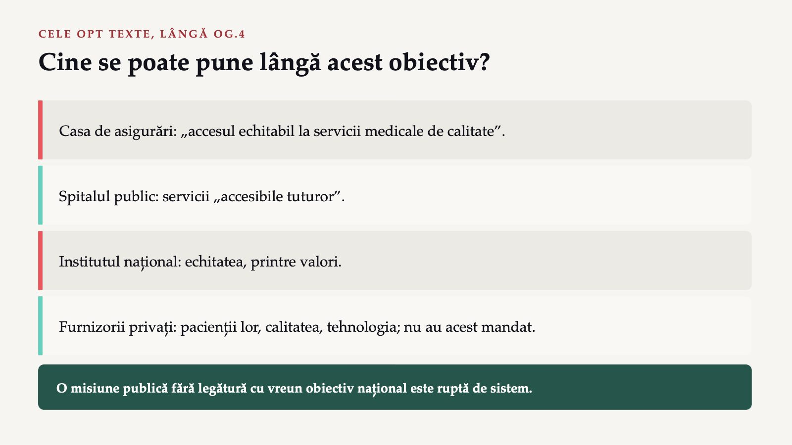
30 / 45Puneți acum cele opt texte lângă acest obiectiv. Casa de asigurări din județ scrie, în misiune, că asigură „accesul echitabil la servicii medicale de calitate”. Spitalul public dorește servicii „accesibile tuturor”. Institutul național are echitatea printre valori. Furnizorii privați vorbesc despre pacienții lor, despre cea mai bună calitate și despre tehnologie, dar nu despre accesul echitabil al populației. Nu este o greșeală a lor: un furnizor privat nu are mandatul de a asigura acces echitabil pentru toată populația. Pentru o instituție publică, însă, o misiune care nu se poate pune lângă niciun obiectiv al strategiei naționale este o misiune ruptă de sistemul în care lucrează.
Răspunsul apare după ședință
Răspunsul apare după ședință
Un obiectiv pentru supravegherea rujeolei
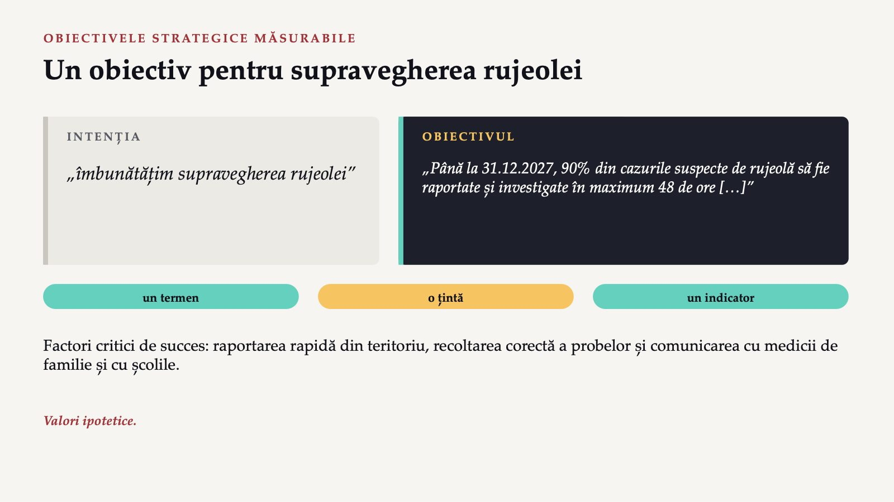
32 / 45O direcție de sănătate publică vrea să-și pună obiectivul „îmbunătățim supravegherea rujeolei”. Factorii critici de succes ai supravegherii sunt raportarea rapidă din teritoriu, recoltarea corectă a probelor și comunicarea cu medicii de familie și cu școlile. Obiectivul corect devine: „Până la 31.12.2027, 90% din cazurile suspecte de rujeolă să fie raportate și investigate în maximum 48 de ore, cu informarea imediată a medicului de familie și a unității școlare.” Acum obiectivul are un termen, o țintă, un indicator și o legătură directă cu fiecare factor critic de succes. Valori ipotetice.
Obiective numai pe ce se poate controla
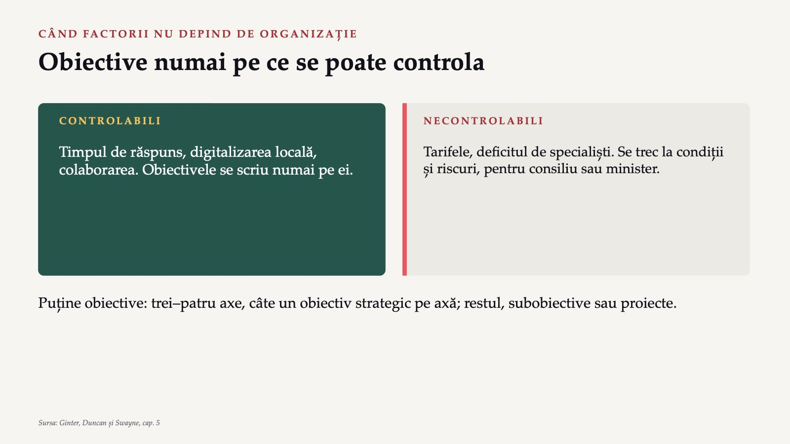
33 / 45Manualul spune că obiectivele strategice sunt repere legate de factorii critici de succes. Problema apare când unii factori nu depind de organizație: tariful plătit de casa de asigurări sau lipsa specialiștilor pe piață. Materialul titularului propune împărțirea lor în controlabili și necontrolabili. Obiectivele se scriu numai pe cei controlabili. Cei necontrolabili se trec la condiții și riscuri și se trimit consiliului sau Ministerului Sănătății, ca probleme de politică. Câte obiective? Puține: gruparea cerințelor pe trei–patru axe, câte un obiectiv strategic pe axă.
Deriva misiunii
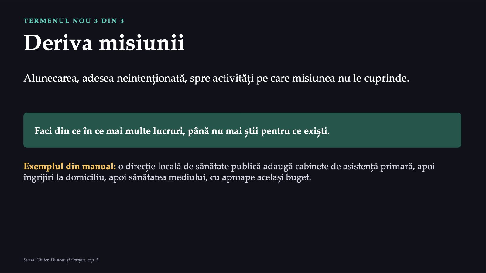
34 / 45Deriva misiunii este alunecarea, adesea neintenționată, a unei organizații spre activități pe care misiunea ei nu le cuprinde. O greșeală înrudită: organizația adaugă tot mai multe activități apropiate de cele vechi, până când nu le mai poate conduce. În cuvinte de zi cu zi: faci din ce în ce mai multe lucruri, până nu mai știi pentru ce exiști. Fiecare pas era justificat. Împreună, au făcut organizația greu de condus.
Un filtru pentru cererile punctuale
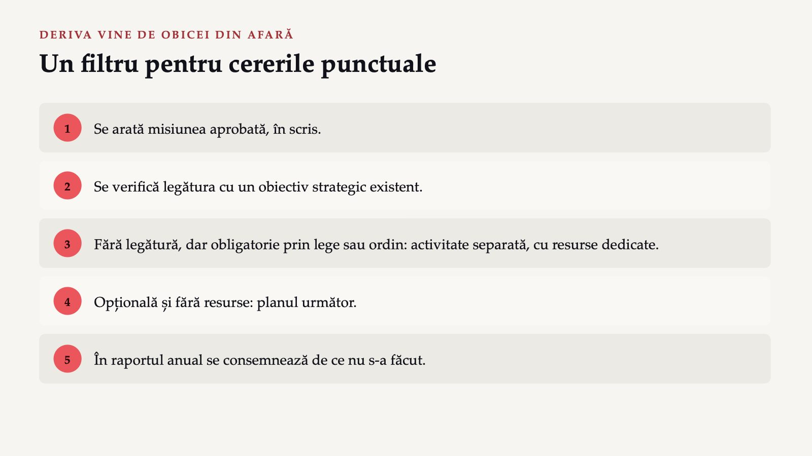
35 / 45Pentru instituțiile românești, deriva vine de obicei din afară, ca o cerere punctuală: o campanie ocazională, o raportare suplimentară, o secție mică. Materialul titularului propune un filtru. Se arată misiunea aprobată, în scris. Se verifică dacă activitatea se poate lega de un obiectiv strategic existent. Dacă nu se poate, dar e obligatorie prin lege sau ordin, se face ca activitate separată, cu resurse dedicate, nu din bugetul de bază. Dacă e opțională și nu are resurse, se propune pentru planul următor. În raportul anual se consemnează de ce nu s-a făcut.
Spitalul municipal M
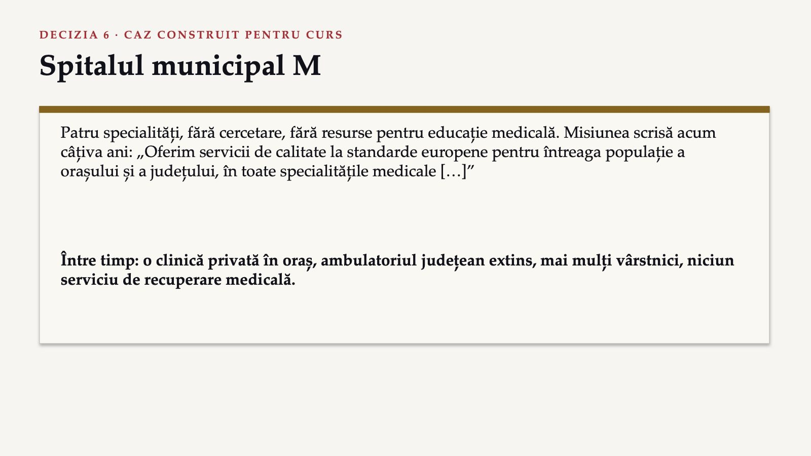
36 / 45Spitalul municipal M are patru specialități, nu este spital județean, nu face cercetare și nu are resurse pentru educație medicală. Misiunea lui, scrisă acum câțiva ani, spune: „Oferim servicii de calitate la standarde europene pentru întreaga populație a orașului și a județului, în toate specialitățile medicale, asigurăm educație medicală continuă, cercetare și implicare comunitară.” Între timp, în oraș s-a deschis o clinică privată, iar spitalul județean și-a extins ambulatoriul în zonă. Populația orașului a scăzut, în timp ce ponderea vârstnicilor în populație a crescut. În oraș nu există un serviciu de recuperare medicală, nici public, nici privat. Noul manager trebuie să propună consiliului de administrație ce face cu misiunea.
Ce propune managerul consiliului de administrație?
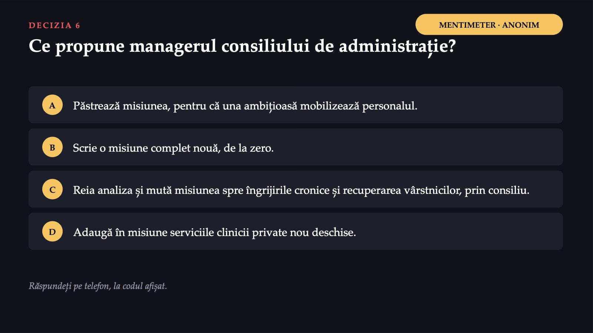
37 / 45Ce propune managerul? Păstrează misiunea, pentru că o misiune ambițioasă mobilizează personalul? Scrie o misiune complet nouă, pornind de la zero? Reia analiza, păstrează ce rămâne adevărat, mută misiunea spre îngrijirile cronice și recuperarea vârstnicilor și o trece prin consiliu? Sau adaugă în misiune serviciile pe care le oferă clinica privată nou deschisă?
Răspunsul apare după ședință
Răspunsul apare după ședință
Managerul propune, consiliul aprobă
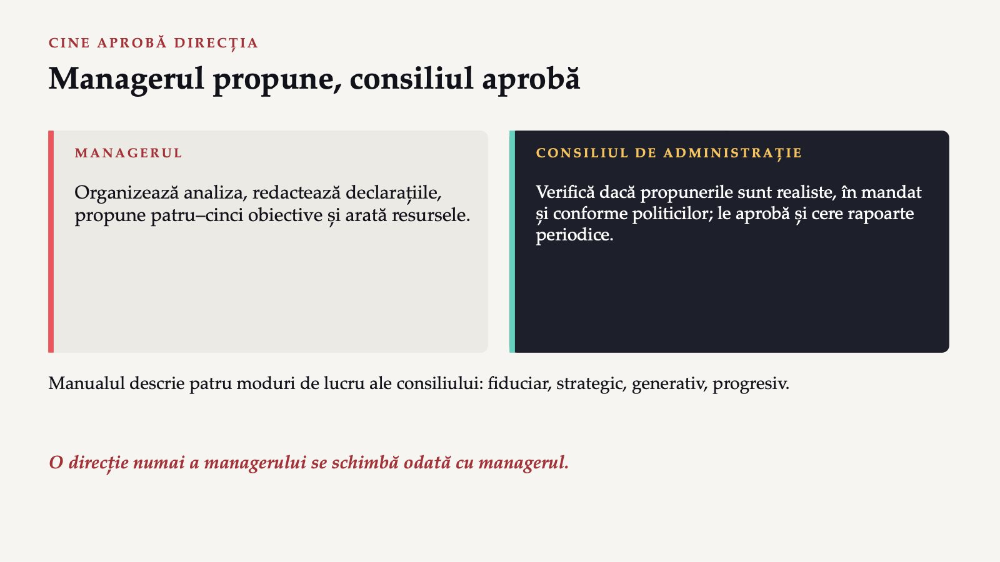
39 / 45Strategiile direcționale nu sunt numai treaba managerului. Ele fixează identitatea organizației pe termen lung, deci trebuie asumate de cei care răspund de ea: consiliul de administrație și autoritatea care conduce instituția. Managerul organizează analiza, redactează misiunea, viziunea și valorile, propune patru–cinci obiective strategice și arată ce resurse cer. Consiliul verifică dacă propunerile sunt realiste, dacă intră în mandatul instituției și dacă respectă politicile naționale și locale, le aprobă și cere rapoarte periodice. Manualul descrie patru moduri în care lucrează un consiliu: fiduciar, strategic, generativ și progresiv. O direcție care e numai a managerului se schimbă odată cu managerul.
Șase greșeli, în șase imagini
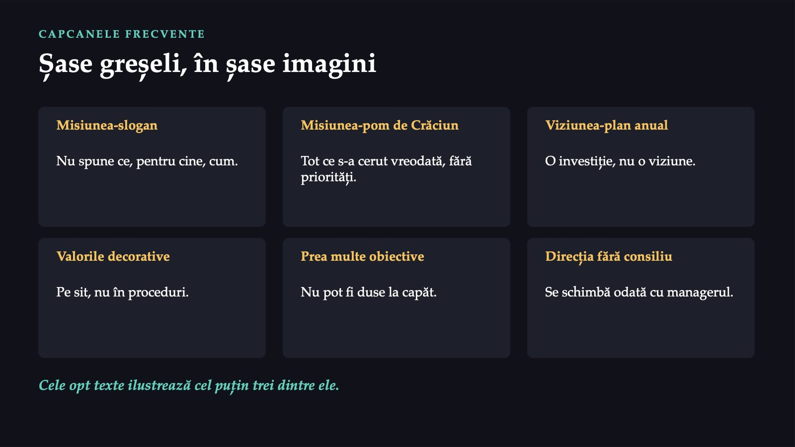
40 / 45Materialul titularului adună greșelile cele mai frecvente în șase imagini. Misiunea-slogan sună bine, dar nu spune ce face organizația, pentru cine și cum. Misiunea-pom de Crăciun cuprinde tot ce s-a cerut vreodată și nu mai are priorități. Viziunea confundată cu planul anual este o investiție, nu o viziune. Valorile decorative stau pe sit, dar nu apar în proceduri și nu au indicatori. Prea multe obiective nu pot fi duse la capăt. Direcția fără consiliu se schimbă odată cu managerul. Cele opt texte de azi ilustrează cel puțin trei dintre ele: misiuni generale, valori fără indicatori și obiective fără ținte.
Răspunsul apare după ședință
Răspunsul apare după ședință
Cinci lucruri de reținut
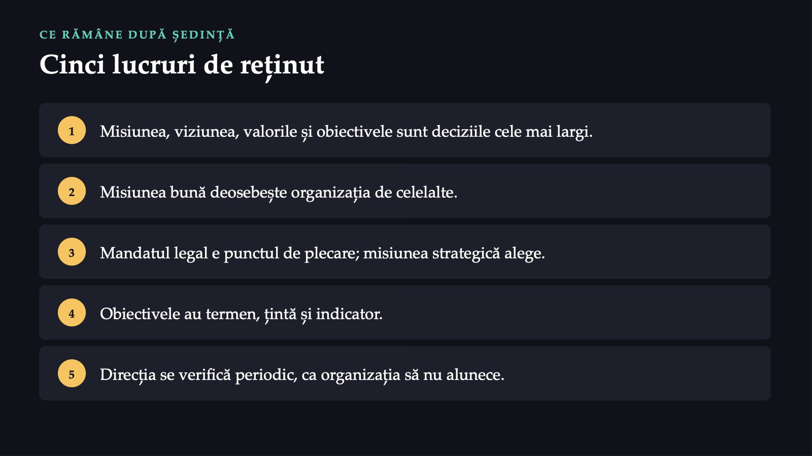
42 / 45Misiunea, viziunea, valorile și obiectivele strategice sunt deciziile cele mai largi ale unei organizații și pun limite tuturor celorlalte. O misiune bună deosebește organizația de celelalte de același fel; una care s-ar potrivi oricui nu își face treaba. O instituție publică pornește de la mandatul ei legal, dar misiunea strategică alege: pentru cine, cum și cu ce prioritate. Obiectivele strategice se leagă de factorii critici de succes și au termen, țintă și indicator. Direcția se verifică periodic, cu întrebarea „ce facem și nu ar trebui să facem?”.
Ce faceți diferit
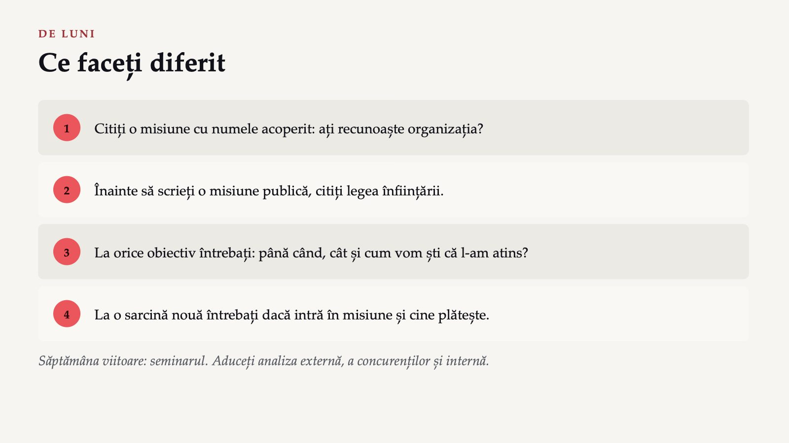
43 / 45Când citiți misiunea unei organizații, acoperiți numele și întrebați-vă dacă ați recunoaște-o. Când scrieți misiunea unei instituții publice, citiți întâi articolul de lege care o înființează. Când cineva vă propune un obiectiv, întrebați: până când, cât și cum vom ști că l-am atins? Când primiți o sarcină nouă, întrebați dacă intră în misiunea aprobată și, dacă nu, cine plătește pentru ea. Săptămâna viitoare, seminarul trece de la citit la scris. Aduceți analiza externă, analiza concurenților și analiza internă făcute până acum.
Patru idei care nu se parcurg în sală
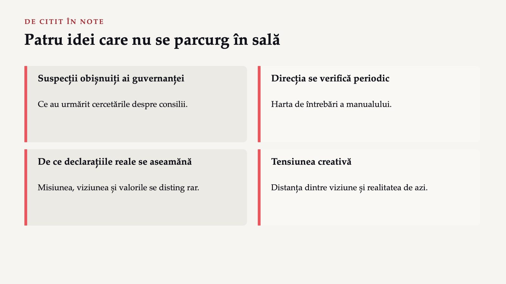
44 / 45Patru idei rămân în note, pentru cine vrea să le citească după ședință: ce au urmărit cercetările despre consilii, harta de întrebări pentru evaluarea periodică a direcției, motivul pentru care declarațiile reale se aseamănă și tensiunea creativă.
Trei întrebări pentru final
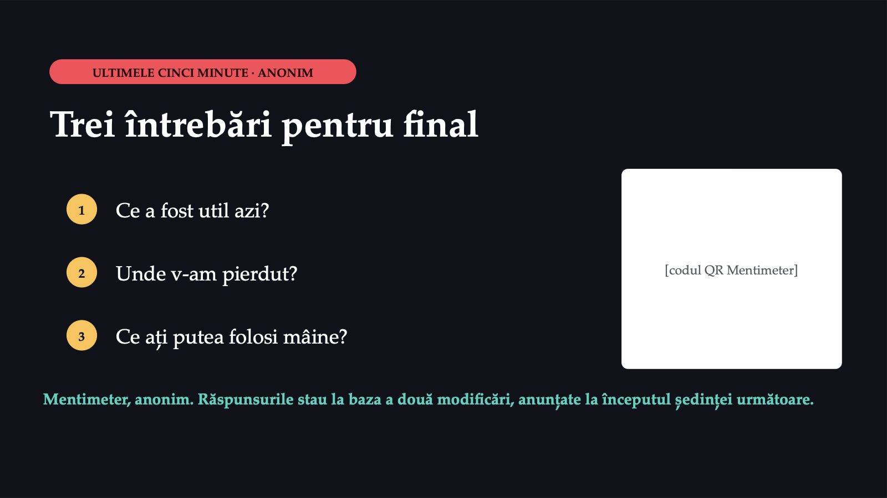
45 / 45Trei întrebări pentru titular, anonim, pe Mentimeter, prin codul QR de pe ultimul diapozitiv: Ce a fost util? Unde v-am pierdut? Ce ați putea folosi mâine? Răspunsurile stau la baza a două modificări, anunțate la începutul ședinței următoare.
Săgeți sau spațiu: navigare · O: vedere de ansamblu · N: notele prezentatorului · F: ecran complet · Esc: închidere